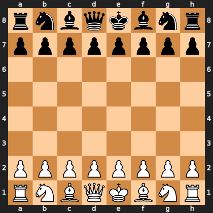
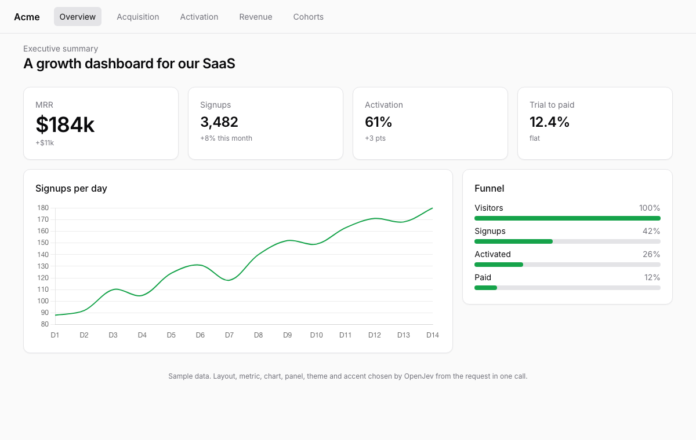

openjev-server
A decision API over any open language model. Send a situation and your questions; get back one choice, yes/no probability or score per question, with a probability for every option. One forward pass per question. Nothing generated.
pip install "openjev-server @ git+https://github.com/abhishekgahlot2/openjev-server" # a GPU: vLLM serves the weights, openjev-server exposes the decision API openjev serve --backend vllm --model openjev/openjev-FP8 --vllm-url http://localhost:8000/v1 --profile openjev # a Mac openjev serve --backend mlx --model openjev-MLX-4bit --profile openjev
Real demos, real decisions
Left: the browser agent completing a Google Flights search on one H100, page text and controls only. Right: 24 inbox messages triaged, 72 typed fields in 6.41 s. The rest ran on a MacBook Pro with the 4-bit build, every decision logged. Scripts and outputs.


- Chess. Legal moves as options, one call per ply: checkmated a random mover in 16 moves, 1.2 s a move.
- Returns policy. Nine rules, 200 generated cases with exact ground truth: 93.5% right, 88.0% when it has to count calendar days itself, against a 43.5% majority baseline.
- Generative UI. One sentence, ten layout decisions in one call, rendered shadcn-style: six distinct dashboards.
- Poker. Heads-up against an equity bot: even over 40 hands, and its hand-strength rating tracks true equity.
- Browser agent and Snake. jev-ultrafast on the local server finished Wikipedia and Hacker News tasks; Snake is played live, one call per move. Interactive chess replay.
What you get
- One API for every decision. Routing, moderation, judging, next action for an agent: your labels arrive with the request, and a probability comes back for each.
- Any model. The server probes the model at start: which label tokens it has, whether exact scores are available, whether it sees images. It refuses to serve noise and tells you why.
- Honest probabilities.
openjev calibratefits a new model's constants on your own development rows. Theopenjevprofile is the one behind OpenJev's published numbers. - Fast on a Mac. The shared part of a request is read once and reused for every question of that request.
- Built to run. Health and readiness, Prometheus metrics, bearer auth, a bench command, Docker Compose for one GPU.
Apache 2.0. Model weights carry their own licences. OpenJev is an independent project, not affiliated with TypeSafe; Jev is their product.